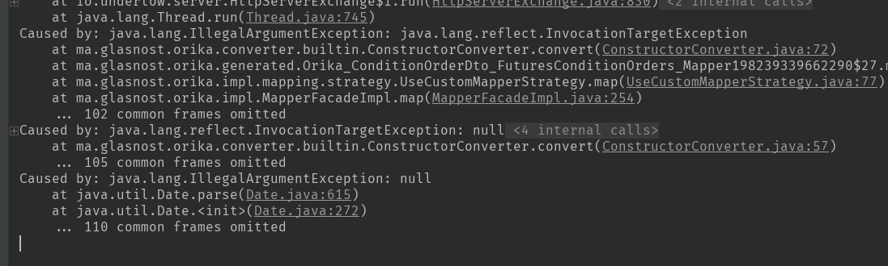

1.orika是提供javabean拷贝的框架，使用只需要引入maven依赖
<dependency>
<groupId>ma.glasnost.orika</groupId>
<artifactId>orika-core</artifactId>
<version>1.4.2</version><!--或最近版本-->
</dependency>
2.例如将Entity拷贝为DTO
import ma.glasnost.orika.MapperFacade;
...
MapperFacade mapperFacade = new MapperFacade();
final OrderDto orderDto = mapperFacade.map(order,orderDto.class);
@Component
public class ABCSummaryMapping implements OrikaMapperFactoryConfigurer {
@Override
public void configure(MapperFactory mapperFactory) {
mapperFactory.classMap(PositionSummaryPo.class, PositionSummaryDto.class)
.field("instrumentID","contractCode")
.field("volumnYd","volumnYestoday")
.field("volumeTot","volumnSum")
.field("volumnTd","volumnToday")
.fieldMap("hedgeType", "hedgeType").converter("hedgeConvert").add()
.byDefault()
.register();
mapperFactory
.getConverterFactory()
.registerConverter("hedgeConvert", new BidirectionalConverter<TestEnum, String>() {
@Override
public String convertTo(TestEnum testEnum, Type<String> type, MappingContext mappingContext) {
return testEnum.toString();
}
@Override
public TestEnumconvertFrom(String s, Type<TestEnum> type, MappingContext mappingContext) {
return TestEnum.getEnum(Integer.valueOf(s));
}
});
}
}
3.配置特殊映射全局类
//全局配置映射
@Component
public class RegisterConverter implements OrikaMapperFactoryConfigurer {
@Override
public void configure(MapperFactory mapperFactory) {
final ConverterFactory converterFactory = mapperFactory.getConverterFactory();
final BidirectionalConverter<TestEnum, Integer> testConverter;
testConverter= new BidirectionalConverter<TestEnum, Integer>() {
@Override
public Integer convertTo(TestEnum source, Type<Integer> destinationType, MappingContext mappingContext) {
return source.getCode();
}
@Override
public TestEnum convertFrom(Integer source, Type<TestEnum> destinationType, MappingContext mappingContext) {
return TestEnum.getEnum(source);
}
};
converterFactory.registerConverter("sys_testConverter",testConverter);
}
}
//配置类中可直接引入
@Component
@DependsOn("registerConverter")
public class ConditionOrderMapping implements OrikaMapperFactoryConfigurer{
@Override
public void configure(MapperFactory mapperFactory) {
mapperFactory.classMap(OrderRequest.class, OrderDto.class)
.fieldMap("offline","offline").converter("sys_testConverter").add()
.byDefault()
.register();
}
}
4.踩坑，当没有配置特殊映射类时，Date类型与String类型转换会失败，此时提示信息不明显
